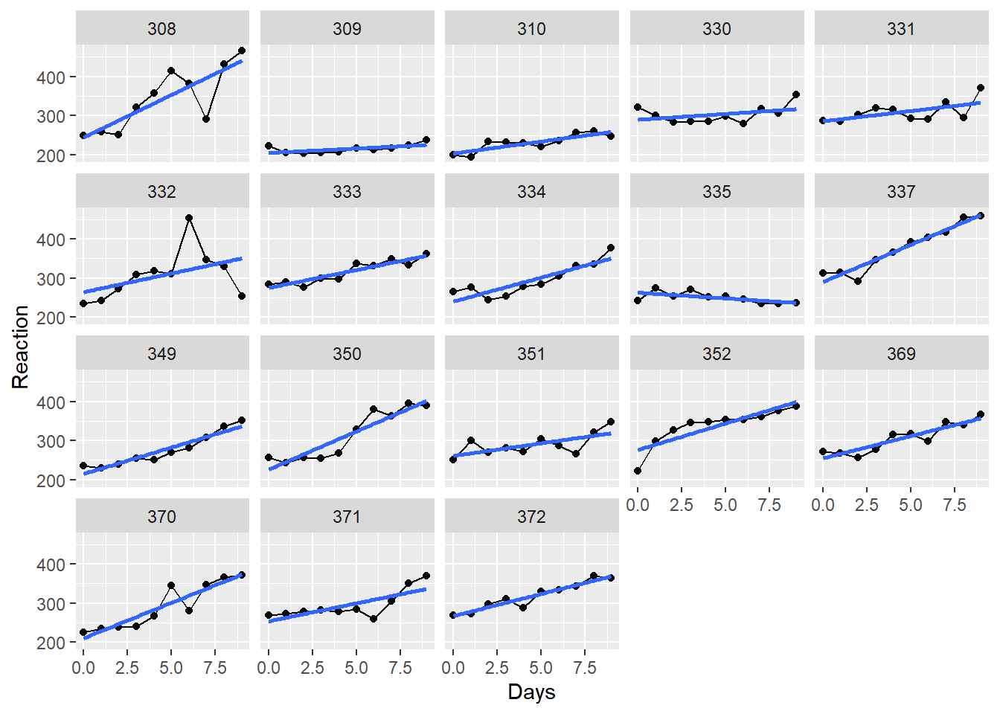
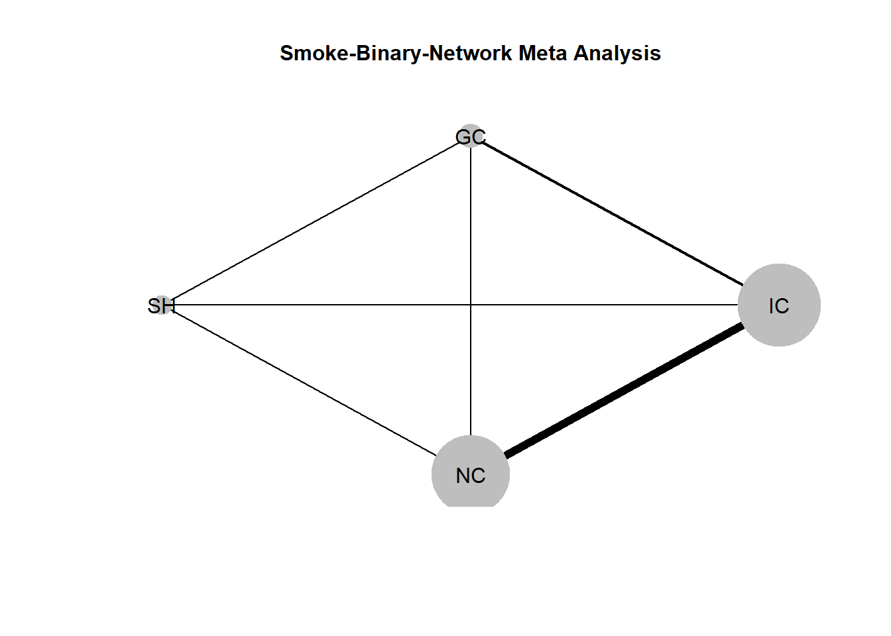
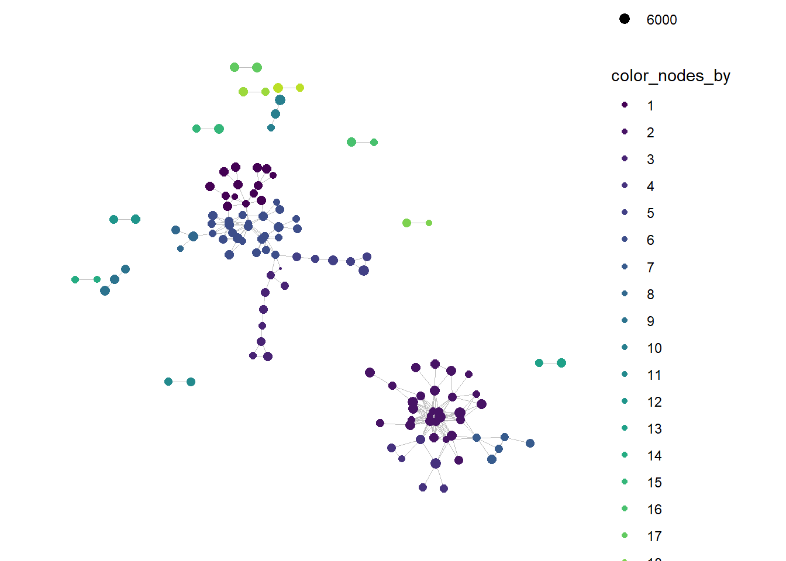
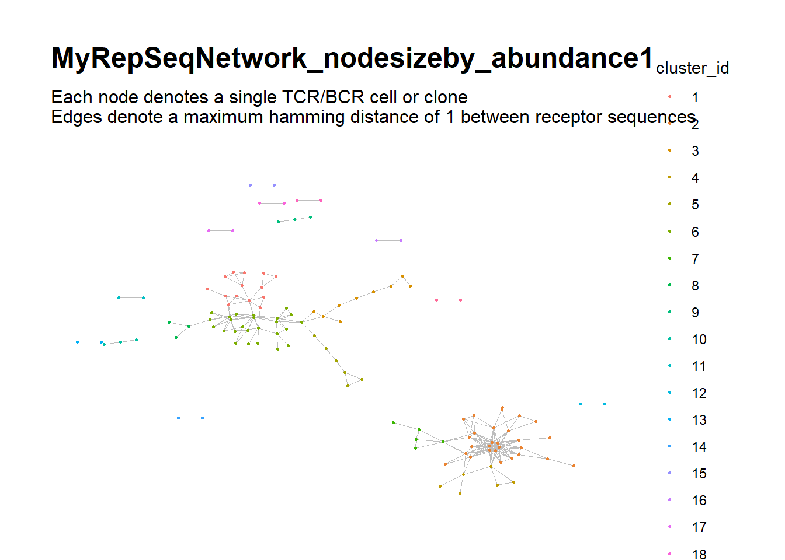
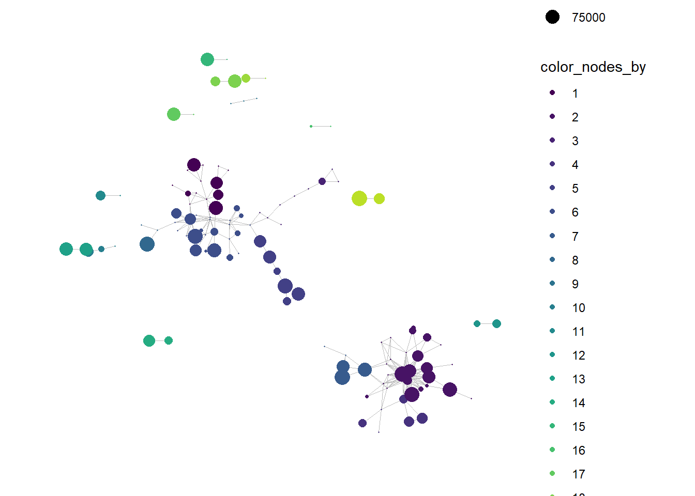

Section 5 A Grid base flowchart using ggplot2
5.1 Using ggplot 2
5.1.1 Summary and Keywords
- Step 1: Create grid: Create a data tibble of \(x\) and \(y\) to create grid
data <- tibble(x= 1:100, y= 1:100)
#
p <- data %>%
ggplot(aes(x, y)) +
scale_x_continuous(minor_breaks = seq(10, 100, 10)) +
scale_y_continuous(minor_breaks = seq(10, 100, 10)) +
theme_linedraw()
p- Step 2: draw box and segments. Here are some commands that will be used:
- geom_rect: to draw rectangle
- annotate: adds geoms to a plot, geoms can be : text, rect, segment, pointstrane
- geom_segment: draws a straight line between points (x, y) and (xend, yend)
- geom_rect: to draw rectangle
- Step 3: Remove the grid background for chart revealing.
- p + theme_void()
5.1.2 Step 1: Create grid
Getting started Let’s first draw a 100 x 100 grid that will be our working space. The grid lines will help us align and place boxes exactly where we want them. Later on we will change the graph theme to theme_void() to remove the background when we don’t need it anymore.
suppressPackageStartupMessages(library(tidyverse))
data <- tibble(x= 1:100, y= 1:100)
#
p <- data %>%
ggplot(aes(x, y)) +
scale_x_continuous(minor_breaks = seq(10, 100, 10)) +
scale_y_continuous(minor_breaks = seq(10, 100, 10)) +
theme_linedraw() 5.1.3 Step 2: draw box and segments.
5.1.3.1 Add 5 boxes
p <- p +
#first box on left
geom_rect(xmin = 1, xmax=19, ymin=94, ymax=100,
color='black', fill='white', size=0.25) +
annotate('text', x= 10, y=97, size=2.5, label= 'Step 1 \n Name Step 1') +
#2nd box on left
geom_rect(xmin = 21, xmax=39, ymin=94, ymax=100,
color='black', fill='white', size=0.25) +
annotate('text', x= 30, y=97, size=2.5,label= 'Step 2 \n Name Step 2') +
#3rd box on left
geom_rect(xmin = 41, xmax=59, ymin=94, ymax=100,
color='black', fill='white', size=0.25) +
annotate('text', x= 50, y=97, size=2.5, label= 'Step 3 \n Name Step 3') +
#4th box on left
geom_rect(xmin = 61, xmax=79, ymin=94, ymax=100,
color='black', fill='white', size=0.25) +
annotate('text', x= 70, y=97, size=2.5, label= 'Step 4 \n Name Step 4') +
#5th box on left
geom_rect(xmin = 81, xmax=99, ymin=94, ymax=100,
color='black', fill='white', size=0.25) +
annotate('text', x= 90, y=97, size=2.5, label= 'Step 5 \n Name Step 5')
p
5.1.3.2 Add 5 long arrows
p <- p +
#first arrow on left
geom_segment(
x=2, xend=2, y=94, yend=50,
size=0.15, linejoin = "mitre", lineend = "butt",
arrow = arrow(length = unit(1, "mm"), type= "closed")) +
#2nd arrow on left
geom_segment(
x=22, xend=22, y=94, yend=50,
size=0.15, linejoin = "mitre", lineend = "butt",
arrow = arrow(length = unit(1, "mm"), type= "closed")) +
#3rd arrow on left
geom_segment(
x=42, xend=42, y=94, yend=50,
size=0.15, linejoin = "mitre", lineend = "butt",
arrow = arrow(length = unit(1, "mm"), type= "closed")) +
#4th arrow on left
geom_segment(
x=62, xend=62, y=94, yend=50,
size=0.15, linejoin = "mitre", lineend = "butt",
arrow = arrow(length = unit(1, "mm"), type= "closed")) +
#5th arrow on left
geom_segment(
x=82, xend=82, y=94, yend=50,
size=0.15, linejoin = "mitre", lineend = "butt",
arrow = arrow(length = unit(1, "mm"), type= "closed"))
p
5.1.3.3 Add completion boxes
p +
#first box on left
geom_rect(xmin = 5, xmax=19, ymin=30, ymax=80,
color='black', fill='white', size=0.25) +
annotate('text', x= 12, y=50, size=2.5,
label= '5 Discontinued \n3 Adverse event\n2 Lack of efficacy') +
#2nd box from left
geom_rect(xmin = 25, xmax=39, ymin=30, ymax=80,
color='black', fill='white', size=0.25) +
annotate('text', x= 32, y=50, size=2.5,
label= '1 Discontinued \n1 Adverse event\n1 Lack of efficacy') +
#3rd box from left
geom_rect(xmin = 45, xmax=59, ymin=30, ymax=80,
color='black', fill='white', size=0.25) +
annotate('text', x= 52, y=50, size=2.5,
label= '4 Discontinued \n2 Adverse event\n1 Lack of efficacy\n1 Other') +
#4th box from left
geom_rect(xmin = 65, xmax=79, ymin=30, ymax=80,
color='black', fill='white', size=0.25) +
annotate('text', x= 72, y=50, size=2.5,
label= '6 Discontinued \n4 Adverse event\n1 Lack of efficacy\n1 Other') +
#4th box from left
geom_rect(xmin = 85, xmax=99, ymin=30, ymax=80,
color='black', fill='white', size=0.25) +
annotate('text', x= 92, y=50, size=2.5,
label= '6 Discontinued \n4 Adverse event\n2 Lack of efficacy') ->p
p5.1.3.4 Add the short arrows
p +
#first arrow on left
geom_segment(
x=2, xend=4.7, y=50, yend=50,
size=0.15, linejoin = "mitre", lineend = "butt",
arrow = arrow(length = unit(1, "mm"), type= "closed")) +
#2nd arrow on left
geom_segment(
x=22, xend=24.7, y=50, yend=50,
size=0.15, linejoin = "mitre", lineend = "butt",
arrow = arrow(length = unit(1, "mm"), type= "closed")) +
#3rd arrow on left
geom_segment(
x=42, xend=44.7, y=50, yend=50,
size=0.15, linejoin = "mitre", lineend = "butt",
arrow = arrow(length = unit(1, "mm"), type= "closed")) +
#4th arrow on left
geom_segment(
x=62, xend=64.7, y=50, yend=50,
size=0.15, linejoin = "mitre", lineend = "butt",
arrow = arrow(length = unit(1, "mm"), type= "closed")) +
#5th arrow on left
geom_segment(
x=82, xend=84.7, y=50, yend=50,
size=0.15, linejoin = "mitre", lineend = "butt",
arrow = arrow(length = unit(1, "mm"), type= "closed")) ->
p
p
5.2 Use Gmisc package
5.2.1 Introduction - Structure - Keywords
grid.newpage(): to create a new page with box/chartboxGrob,boxPropGrob: generates boxesconnectGrob: generate arrows between boxesspreadHorizontal,spreadVertical: Spread - we want to use the full plot and either we position each element or we automatically spread them in a vertical or horizontal directionalignHorizontal,alignVertical: Alignment of boxes - before or after spreading we may want to align boxes
5.2.2 A basic box
library(Gmisc, quietly = TRUE)## Warning: package 'Gmisc' was built under R version 4.2.1## Warning: package 'htmlTable' was built under R version 4.2.1library(glue)
library(htmlTable)
library(grid)
library(magrittr, quietly = TRUE )##
## Attaching package: 'magrittr'## The following object is masked from 'package:purrr':
##
## set_names## The following object is masked from 'package:tidyr':
##
## extractgrid.newpage()
txt <-
"Just a plain box
with some text
- Note that newline is OK"
boxGrob(txt) We can position and style this box as any element:
grid.newpage()
boxGrob("A large\noffset\nyellow\nbox",
width = .8, height = .8,
x = 0, y = 0,
bjust = c("left", "bottom"),
txt_gp = gpar(col = "darkblue", cex = 2),
box_gp = gpar(fill = "lightyellow", col = "darkblue"))The boxPropGrob is for displaying proportions as the name indicates.
grid.newpage()
boxPropGrob("A box with proportions",
"Left side", "Right side",
prop = .6) ###
grid.newpage()
smpl_bx <- boxGrob(
label = "A simple box",
x = .3,
y = .9,
just = "left")
prop_bx <- boxPropGrob(
label = "A split box",
label_left = "Left side",
label_right = "Right side",
x = .5,
y = .3,
prop = .3,
just = "center")
plot(smpl_bx)
plot(prop_bx) ### Connect the boxes
grid.newpage()
# Initiate the boxes that we want to connect
side <- boxPropGrob("Side", "Left", "Right",
prop = .3,
x = 0, y = .9,
bjust = c(0,1))
start <- boxGrob("Top",
x = .6, y = coords(side)$y,
box_gp = gpar(fill = "yellow"))
bottom <- boxGrob("Bottom",
x = .6, y = 0,
bjust = "bottom")
sub_side_left <- boxGrob("Left",
x = coords(side)$left_x,
y = 0,
bjust = "bottom")
sub_side_right <- boxGrob("Right",
x = coords(side)$right_x,
y = 0,
bjust = "bottom")
odd <- boxGrob("Odd\nbox",
x = coords(side)$right,
y = .5)
odd2 <- boxGrob("Also odd",
x = coords(odd)$right +
distance(bottom, odd, type = "h", half = TRUE) -
unit(2, "mm"),
y = 0,
bjust = c(1,0))
exclude <- boxGrob("Exclude:\n - Too sick\n - Prev. surgery",
x = 1,
y = coords(bottom)$top +
distance(start, bottom, type = "v", half = TRUE),
just = "left", bjust = "right")
# Connect the boxes and print/plot them
connectGrob(start, bottom, "vertical")
connectGrob(start, side, "horizontal")
connectGrob(bottom, odd, "Z", "l")
connectGrob(odd, odd2, "N", "l")
connectGrob(side, sub_side_left, "v", "l")
connectGrob(side, sub_side_right, "v", "r")
connectGrob(start, exclude, "-",
lty_gp = gpar(lwd = 2, col = "darkred", fill = "darkred"))
# Print the grobs
start
bottom
side
exclude
sub_side_left
sub_side_right
odd
odd25.2.3 Aligment
align_1 <- boxGrob("Align 1",
y = .9,
x = 0,
bjust = c(0),
box_gp = gpar(fill = "#E6E8EF"))
align_2 <- boxPropGrob("Align 2",
"Placebo",
"Treatment",
prop = .7,
y = .8,
x = .5)
align_3 <- boxGrob("Align 3\nvertical\ntext",
y = 1,
x = 1,
bjust = c(1, 1),
box_gp = gpar(fill = "#E6E8EF"))
b1 <- boxGrob("B1",
y = .3,
x = .1,
bjust = c(0))
b2 <- boxGrob("B2 with long\ndescription",
y = .6,
x = .5)
b3 <- boxGrob("B3",
y = .2,
x = .8,
bjust = c(0, 1))
grid.newpage()
align_1
alignHorizontal(reference = align_1,
b1, b2, b3,
.position = "left")
align_2
alignHorizontal(reference = align_2,
b1, b2, b3,
.position = "center",
.sub_position = "left")
alignHorizontal(reference = align_2,
b1, b2, b3,
.position = "left",
.sub_position = "right")
align_3
alignHorizontal(reference = align_3,
b1, b2, b3,
.position = "right")org_cohort <- boxGrob(glue("Stockholm population",
"n = {pop}",
pop = txtInt(1632798),
.sep = "\n"))
eligible <- boxGrob(glue("Eligible",
"n = {pop}",
pop = txtInt(10032),
.sep = "\n"))
included <- boxGrob(glue("Randomized",
"n = {incl}",
incl = txtInt(122),
.sep = "\n"))
grp_a <- boxGrob(glue("Treatment A",
"n = {recr}",
recr = txtInt(43),
.sep = "\n"))
grp_b <- boxGrob(glue("Treatment B",
"n = {recr}",
recr = txtInt(122 - 43 - 30),
.sep = "\n"))
excluded <- boxGrob(glue("Excluded (n = {tot}):",
" - not interested: {uninterested}",
" - contra-indicated: {contra}",
tot = 30,
uninterested = 12,
contra = 30 - 12,
.sep = "\n"),
just = "left")
grid.newpage()
vert <- spreadVertical(org_cohort,
eligible = eligible,
included = included,
grps = grp_a)
grps <- alignVertical(reference = vert$grps,
grp_a, grp_b) %>%
spreadHorizontal()
vert$grps <- NULL
excluded <- moveBox(excluded,
x = .8,
y = coords(vert$included)$top + distance(vert$eligible, vert$included, half = TRUE, center = FALSE))
for (i in 1:(length(vert) - 1)) {
connectGrob(vert[[i]], vert[[i + 1]], type = "vert") %>%
print
}
connectGrob(vert$included, grps[[1]], type = "N")
connectGrob(vert$included, grps[[2]], type = "N")
connectGrob(vert$eligible, excluded, type = "L")
# Print boxes
vert
grps
excluded